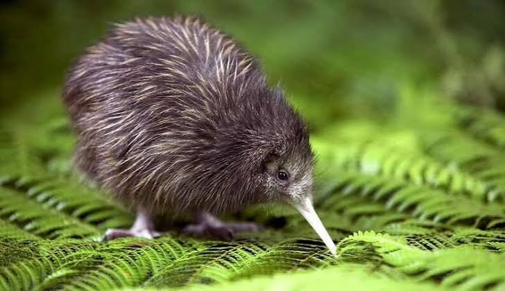
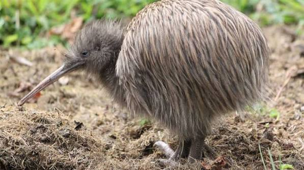
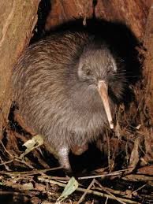

Kiwi habitat
The kiwi is a unique, flightless bird that is native to New Zealand. It lives in forests, scrublands, grasslands, and areas with thick vegetation where it can easily hide from predators. Kiwis prefer habitats with soft, damp soil because they use their long beaks to search for worms, insects, and other small animals underground. They usually come out at night, making them nocturnal animals. Protecting the kiwi's natural habitat is important because habitat loss and introduced predators have made it difficult for kiwi populations to survive.

How Kiwis live
Kiwis are small, flightless birds that live in the forests, grasslands, and scrub areas of New Zealand. Unlike most birds, kiwis are nocturnal, which means they are active at night and rest during the day. During the daytime, they usually sleep in burrows, hollow logs, or other sheltered places to stay safe from predators.When night falls, kiwis leave their hiding places and begin searching for food. They use their long beaks and excellent sense of smell to find insects, worms, spiders, and other small creatures in the soil. Kiwis spend much of the night walking through their territory, digging into the ground, and looking for food. They are generally solitary birds and often communicate with each other using loud calls.Before sunrise, kiwis return to their shelters to rest. This daily routine helps them avoid danger and find food more easily. Their unique lifestyle and nighttime habits make kiwis one of the most fascinating birds in the world.
.jpg)
Why they are flight less
Kiwis are flightless because they evolved in New Zealand, where there were no native land mammals to hunt them. Since they did not need to fly to escape predators, they gradually developed small, weak wings and strong legs instead. Over millions of years, kiwis adapted to living on the ground, where they search for worms, insects, and other small animals with their long beaks, especially at night. Today, kiwis cannot fly, but they are excellent runners and are well suited to their forest habitat.
